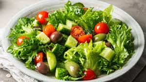
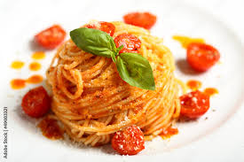

Pratos Populares

Pizza
A pizza é um prato italiano amado mundialmente, feita com molho de tomate, queijo e uma variedade de ingredientes.
Receita:
- Ingredientes: Massa de pizza, molho de tomate, queijo mozzarella, manjericão, azeite de oliva.
- Instruções: Preaqueça o forno a 250°C. Abra a massa, coloque o molho de tomate, adicione o queijo e asse por 10-15 minutos. Finalize com manjericão fresco e azeite.

Sushi
O sushi é um prato tradicional japonês, geralmente composto de arroz com vinagre, peixe cru e outros acompanhamentos.
Receita:
- Ingredientes: Arroz de sushi, peixe salmão fresco, alga nori, vinagre de arroz, açúcar.
- Instruções: Cozinhe o arroz e misture com vinagre, açúcar e sal. Modele o arroz, coloque fatias de salmão e enrole com alga nori.

Hambúrguer
O hambúrguer é um sanduíche clássico da culinária americana, com carne de boi, queijo, alface, tomate e molhos especiais.
h3>Receita:- Ingredientes: Carne moída, pães de hambúrguer, queijo cheddar, alface, tomate, cebola roxa, ketchup, maionese.
- Instruções: Modele os hambúrgueres, tempere com sal e pimenta e grelhe por 5-7 minutos de cada lado. Monte o hambúrguer com os pães, carne, queijo e os ingredientes adicionais.

Salada Fresca
Uma salada leve com alface, tomate, pepino, cenoura e molho de mostarda.
Receita:
- Ingredientes: Alface, tomate, pepino, cebola roxa, azeitonas, queijo feta, azeite de oliva, limão, sal e pimenta.
- Instruções: Corte os vegetais, adicione o queijo feta e as azeitonas. Tempere com azeite, limão, sal e pimenta a gosto.

Pasta Italiana
Macarrão com molho de tomate caseiro, manjericão e queijo parmesão.
Receita:
- Ingredientes: Macarrão, carne moída, molho de tomate, cebola, alho, azeite, sal, pimenta, queijo parmesão.
- Instruções: Cozinhe o macarrão. Refogue a carne com cebola e alho, adicione o molho de tomate e deixe cozinhar por 20 minutos. Sirva o molho sobre a pasta e finalize com queijo parmesão.